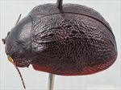
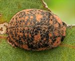
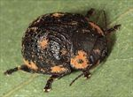
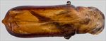
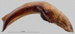
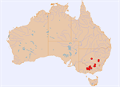

Click on images to enlarge


Male, Cowra, New South Wales


Male, Wyuna, Victoria
![Male, Mt Alexander Regional Park, Victoria [Geoff Walker]](assets/image/Ta171/Ta171_A19-122b_SM.jpg){kind=link}

Male, Mt Alexander Regional Park, Victoria [Geoff Walker]


Aedeagus, dorsal view (Tooborac, Victoria)


Aedeagus, lateral view (Tooborac, Victoria)


Distribution
Name
Trachymela melanospila (Chapuis)
Reference specimen
2001-061b, Wagga Wagga, Southern New South Wales.
Adult Description
Length: ♂ 7.7–8.9 mm (n=10), ♀ (7.3)7.9–9.7 mm (n=16).
Colouration:
- Head: mid- to dark brown, with black usually present around antennal insertions and in a thin line along fronto-clypeal suture, mandibles very dark brown with black tips or more extensively black; antennomeres 1–2 light brown, 3–5 grading towards a much darker brown, 6–11 very dark brown or even black, often with proximal extremes of a paler shade.
- Pronotum: brown, central region slightly or noticeably darker than rear of head (rarely almost concolorous with or much darker), lateral marginal areas often slightly paler with lateral edges usually very dark brown, even black.
- Scutellum: dark brown, concolorous with adjacent region of pronotum, sometimes with a darker border.
- Elytra: brown, mostly concolorous with or fractionally lighter shade than darkest region of pronotum with patches and flecks of slightly lighter colour with the larger of these situated along the elytral margin and another centred on antero-median depression; scattered smooth elevated verrucae that are darker are scattered over elytral disc; punctures are concolorous with or a fractionally darker shade than surrounding interstices, humeral callus black.
- Venter & Legs: dark brown with lateral extremities of ventrites and distal leg segments sometimes a slightly lighter shade, elytral epipleura black, rarely brown.
- Cuticular Wax: orange-brown, concentrated along elytral lateral margins and in antero-lateral depression, but often with considerable amounts present as smaller clumps not usually evident as longitudinal arrangements in posterior half of elytra.
Morphology:
- Head: punctures moderately large (pd ≈ 2–2.5×ef) and quite evenly and densely distributed. Antennae short (AL/BL: ♂ 39–44%, ♀ 34–36%), filiform.
- Pronotum: almost evenly curved transversely, foveal depression absent or very shallow, round foveal elevation usually present but low, less often absent, discal area with surface very slightly uneven, nitid, and puncturation clearly impressed with punctures similar in size or fractionally smaller than those on head, evenly to very slightly unevenly distributed and relatively dense (spacing ≈ 1.5–2pd), becoming noticeably coarser towards lateral margins. Front margins join slightly thinner lateral margins in a smoothly rounded right-angle, with lateral margin curving smoothly and gradually towards rear margin, broadest about 2/3 of distance to posterio-lateral angle.
- Scutellum: unpunctured or with sparse, fine and unevenly distributed punctures, smaller and shallower than on pronotum.
- Elytra: surface evenly curved, punctures surrounded by very convex interstices, closely spaced and relatively evenly distributed, small to medium-sized elevated and smooth verrucae are present over much of the discal area, though at lower density in the area of antero-median depression, verrucae sometimes with a very fine puncture at centre, distributed unevenly though many are arranged within longitudinal series while those just behind antero-median depression may align laterally, some are elongated longitudinally, 2 or 3 are usually present below humeral callus, elytral suture not carinate, posterior third of marginal area slightly to quite strongly concave, surface discontinuous (sometimes only slightly) under humeral callus. Vertical extension of epipleura relatively small (HCE/PW = 0.31–0.35).
- Venter: prosternal process almost parallel or narrowing anteriorly, closed anteriorly, at most a very sparse scatter of short setae present along prosternal process and on mesoventrite, a single long seta present on anterior, median and posterior trochanters; front edge of metaventrite beveled, flat; inner edge of epipleura lacking setae.
Male Genitalia (Aedeagus):
- Dimensions: short (LPE/BL = 25–31%).
- Dorsal view: shaft approximately parallel-sided or very slightly sinuate with maximum width around posterior of ostium (WPE/LPE = 0.29–0.34) from where sides converge smoothly and gradually towards apex, tip triangular, dorsal surface lightly sclerotized, dorso-median channel present but often short and poorly defined, ostium relatively large.
- Lateral view: shaft quite evenly and continually curved over whole length with curvature increasing just before apex, tip deflexed, flagellum moderately thick.
Immature Stages
Unknown.
Similar species
- Ta23: these two species appear very similar in life as the distribution of cuticular wax is almost the same. They differ by the possession of much larger and more prominent verrucae of Ta171.
Notes
- Taxonomy: Identification as Trachymela melanospila (Chapuis) is from a label attached to a specimen from the Peter Kelly collection. Chapuis gives Gipsland [sic] and Sydney as localities. The size of 9 mm given in Chapuis’ description is certainly well within the size range of Ta171. The assignment of this name is somewhat tentative, since Chapuis’ very brief description could fit several other species and requires an examination of the holotype specimen to be sure. Note that the T. melanospila label was also attached to a specimen of Ta76 by Peter Kelly. Ta76 is a mallee species that does not occur in eastern Victoria and it is very unlikely to be melanospila. Ta171 belongs to the piceola-group of species that include Ta21, Ta23 and Ta170 (amongst others) and are characterized by the marginal distribution of their cuticular wax as well as the structure of the aedeagus.
- Host Associations: Individuals have been collected primarily from box-barked eucalypts (Symphyomyrtus : Adnataria), including Eucalyptus polyanthemos (n=3) and E. microcarpa (n=2), with some records also from section Exertaria eucalypts, including Eucalyptus camaldulensis.
Copyright © 2026. All rights reserved.